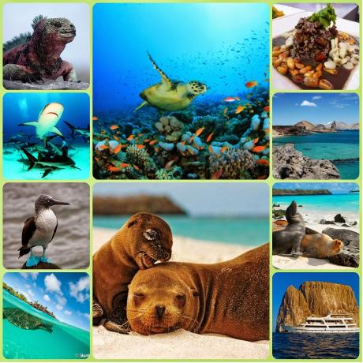

Viaja, Primero ECUADOR


Islas Galapagos

Las islas Galápagos son un archipiélago de 19 islas situadas unos mil kilómetros de la costa de Ecuador al oeste en el océano Pacífico. En este texto trataré la historia de este archipiélago interesante que es famoso de su ecosistema extraordinario. Se estima que el archipiélago se formó por movimientos tectónicos hace unos cinco millones de años. Las islas del este son las más antiguas y las del oeste se formaron más recientemente. Aún están en proceso de formación con sus erupciones volcánicas. En el siglo XIX, cuando la piratería y el poder español en Latinoamérica empezaron a disminuir, la Revolución Industrial cambió las demandas de oro a la demanda de aceite de ballenas. Entonces la caza de ballenas (valaanpyynti) llegó a ser el nuevo negocio en las islas Galápagos. Por eso, los buques ingleses y americanos empezaron a explorar las islas y sus potenciales para la caza de ballenas. Con este nuevo negocio internacional, se trajeron nuevos animales en las islas, por ejemplo la cabra que luego sobrepasó algunas especies indígenas de las islas.

Perfil del Autor
Erika Miranda Fajardo, nacida en Cuenca Ecuador el 03 de Marzo de 1993. Fotografa aficionada, amante a la aventura, viajar y descubrir las culturas y tradiciones del Mundo. Recomiendo conocer las Islas Galapagos, es una avnetura y encuentro con la naturaleza en su estado mas puro!